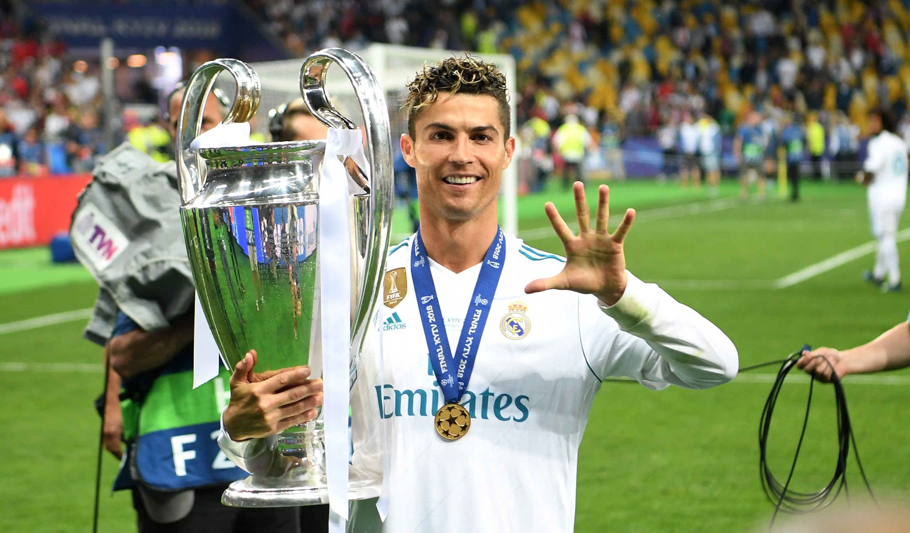
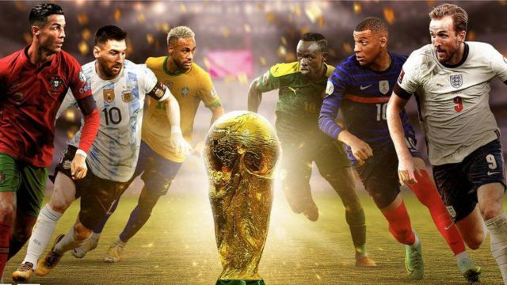

| Rules | Famous Teams | Famous Players |
Football is the most popular sport. Football is also one of the most watched sports ever with over half the world watching, 3.5 billon fans. The World Cup and the champions league are the most important competitions in football. The champions league only takes the top 4 teams in every league in Europe. The World Cup is a competition where every nation competes to get a spot at the world cup. The World Cup trophy is worth around 20 million dollars. The Ballon D'or is the hardest trophy to win because it goes to the best player of the year. This award take place every year.

